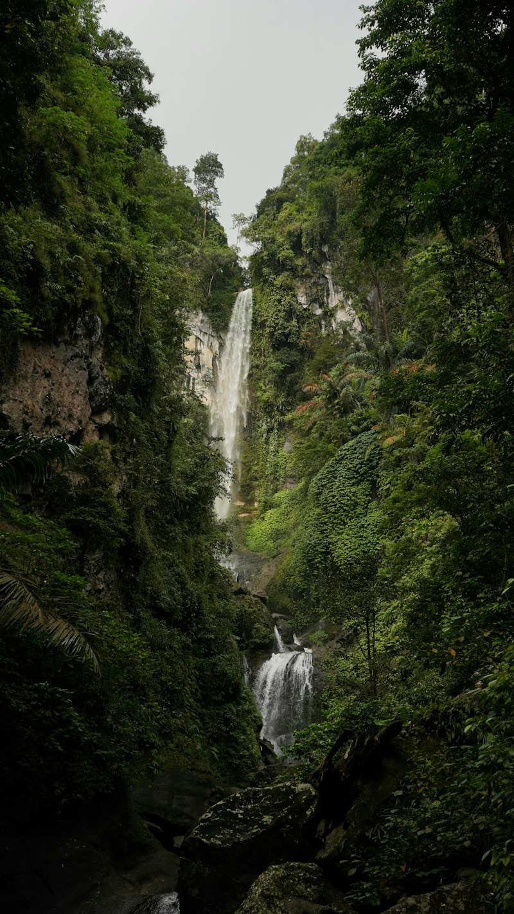
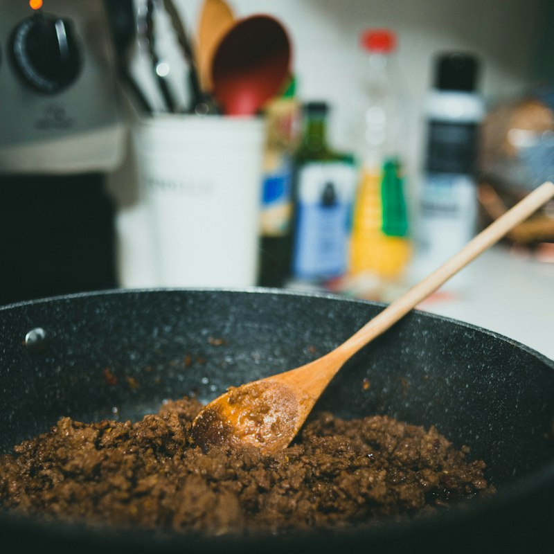

Paket Pelesir Budaya & Alam Sumatera Barat

Minangkabau Heritage & Harau Valley 3D2N
Jam Gadang, Ngarai Sianok, Lobang Jepang, Istana Pagaruyung, dan tebing granit Harau.
Rp 1.650.000 / org

Kelok Sembilan & Glamping Harau 2D1N
Menginap di glamping tenda tepi tebing sawah Harau, api unggun, dan jembatan megah Kelok 9.
Rp 950.000 / org

Danau Maninjau Kelok 44 & Puncak Lawang
Pemandangan paralayang Puncak Lawang, kelokan legendaris 44, dan sentra tebu tradisional.
Rp 1.500.000 / org